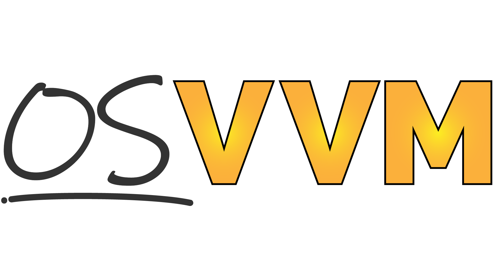

About OSVVM¶

About OSVVM¶
OSVVM is an advanced verification methodology that defines a VHDL verification framework, verification utility library, verification component library, scripting API, and co-simulation capability that simplifies your FPGA or ASIC verification project from start to finish. Using these libraries you can create a simple, readable, and powerful testbench that will boost productivity for either low level block tests (unit tests) or complex FPGA and ASIC tests.
OSVVM is developed by the same VHDL experts who have helped develop VHDL standards. We have used our expert VHDL skills to create advanced verification capabilities that provide:
A structured transaction-based framework
Suitable for all verification tasks – from Unit/RTL to full chip/system level tests.
Similar block diagram to SystemVerilog + UVM, except It plugs together just like RTL
Facilitates re-use of VC and test cases through all levels of testing (RTL to Full Chip)
Model Independent Transaction (MIT) Library
Defines Transaction API - procedures called by test case to build up sequences of interface operations - such as send, get, write, read
Defines Transaction Interface - connects Verification Component to Test Sequencer.
Used by all OSVVM defined VC
Simplified Verification component (VC) development
Uses MIT library = building block level re-use.
Makes development of a VC as simple as writing a procedure.
No OO or fork and join - uses natural concurrency of a VHDL entity/architecture
Any VHDL engineer can do this
Readable Test cases
Simplified since all VC of a similar type implement a subset of the MIT transaction calls (send, get, …)
Directed tests or complex, randomized tests can be written by any VHDL engineer
Readable and reviewable by the whole team including software and system engineers.
Unmatched Test Reports
Build Summary - HTML (for humans) + JUnit XML (for CI tools)
Test Cases - HTML
Logs - HTML + plain text
Requirements Tracking - HTML + CSV
Helps Find and Debug issues faster
Powerful verification utilities that make VHDL a full verification language, including
Constrained Random, Functional Coverage, Scoreboards, FIFOs, Memory Models, error logging and reporting (alerts), and message filtering (logs).
Capabilities are simple to use, concise, and work like built-in language features.
Requirements Tracking
Tracked using both OSVVM’s affirmations and functional coverage
Tracks a count of each requirement and not just a boolean type check.
A Common Scripting API
Same script runs all simulators – including GHDL, NVC, Aldec Riviera-PRO and ActiveHDL, Siemens Questa and ModelSim, Synopsys VCS, Cadence Xcelium, and Xilinx XSIM.
Is an API on top of Tcl
Most scripts are just slightly more than a list of files
Can run Tcl when you need it - usually no Tcl is required
Free, Open Source Verification Components include
AXI Full and Lite, AxiStream, Wishbone, UART, xMII, SPI, DpRam, VideoBus.
Co-simulation
Supports running software (C++) in a hardware simulation environment.
Write test cases in C++
Run C++ models such as instruct set simulators
Architected by a long-time IEEE VHDL working group contributor
So expect better VHDL implementations.
It is Free, Open Source under APACHE 2.0
Upgrades an ordinary VHDL license to a full featured verification capabilities
On GitHub and IEEE Open Source.
We accept issues and pull requests on GitHub.
Join us.
Get similar verification capabilities to SystemVerilog + UVM without needing OO.
Looking to improve your VHDL verification methodology? OSVVM provides a complete solution for VHDL ASIC or FPGA verification. There is no new language to learn. It is simple, powerful, and concise. Each piece can be used separately. Hence, you can learn and adopt pieces as you need them.
SynthWorks has been using OSVVM for 25+ years in our training classes and consulting work. During that time, we have innovated new capabilities and evolved our existing ones to increase re-use and reduce effort and time spent.